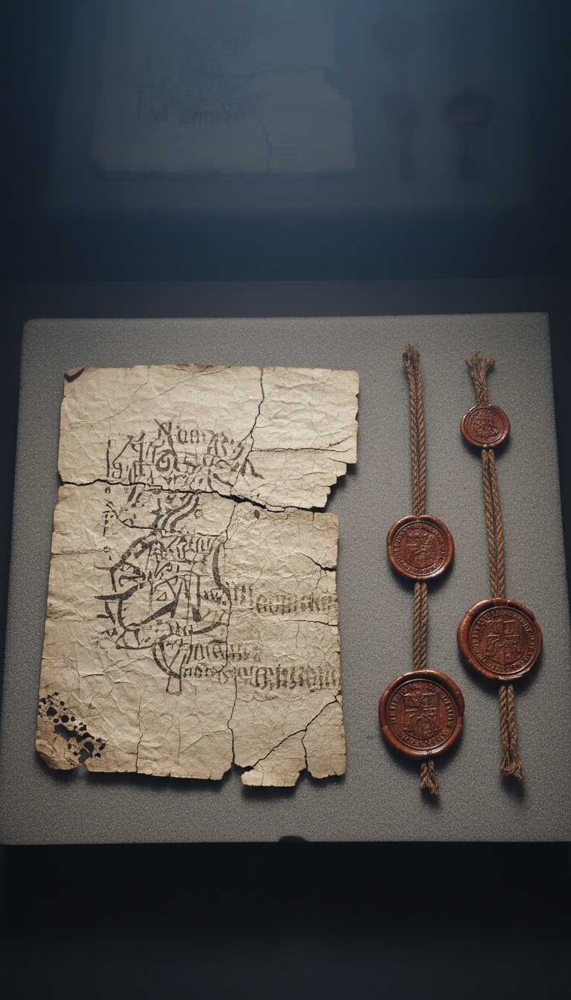

The face you picture when someone says the word devil was drawn in Paris in 1856 by a failed deacon, and every knight who burned for worshipping it had been dead for 542 years.
That is not a metaphor and it is not a stretch. The horned goat with the torch between its horns has a signature, a publisher and a publication date. The men accused of bowing to it were arrested in 1307, tortured into describing something none of them could describe the same way twice, and quietly absolved by the Pope in 1308 on a document the Vatican then sat on for 693 years.

One Morning. One Kingdom. Every Templar In Chains.
Sealed orders went out to the royal bailiffs of France in September 1307 with instructions not to break the wax until dawn on Friday, October 13. Philip IV of France arrested the Knights Templar in his kingdom in a single coordinated sweep, before any of them could ride, warn or arm.
Look at who ordered it. Philip had debased the French livre three times, expelled the Jews of France in 1306 and seized the debts owed to them, and borrowed heavily from the Paris Temple to fund his war with England. The man who accused the Templars of devil worship was the man who owed them money and had already run the same seizure play once.
The confessions arrived fast because the method was fast. Of the 138 Templars deposed in Paris in October and November 1307, 134 confessed to something. Outside France, where royal torture had no reach, the verdicts collapsed. The Council of Tarragona acquitted the Aragonese Templars in 1312. The hearings in Cyprus acquitted them. The English trials produced almost nothing until inquisitors were finally permitted torture, and even then they got vague admissions and no idol.
The Idol Nobody Could Describe Twice
Here is the problem at the center of the whole case. The Templar trial records, held today at the Archives Nationales in Paris, do not agree on what Baphomet actually was.
One knight, Raoul de Gizy, described a head so terrifying he could not look at it. Others described a cat, and could not agree whether it was grey, red or black. Others described a head with two faces, or three faces, or a beard, or a skull, or a gilded human head, or a painted panel, or a wooden post.
Twelve. That is roughly how many of the 138 Paris deponents mentioned an idol at all. The rest confessed to the charges that inquisitors led them toward on denial of Christ and obscene kisses, and said nothing about any object. A cult with a central god produces a consistent description of that god. This produced a rummage sale.
The Name Was A Crusader Insult Two Centuries Early
Baphomet was not a Templar word. It was a Provencal-Latin mangling of Mahomet, and it was already in circulation before the order existed in any organised form.
Anselm of Ribemont wrote to the Archbishop of Reims from the siege of Antioch in July 1098 and described the enemy calling on Bafometh. The Occitan troubadour Olivier le Templier used Bafomet around 1265 in a poem lamenting Christian defeat in the Holy Land. Medieval European writers used a dozen spellings for Muhammad because they were transcribing a name they had only ever heard shouted across a battlefield.
So the charge decodes like this. French knights who had spent two centuries garrisoned in the Levant were accused of worshipping an idol whose name was the standard crusader slur for Islam. That is the oldest smear in the medieval playbook, and Philip's lawyers used it because a jury of bishops already knew the word.
The trial produced a cat, a skull, a bearded head and a face with three faces. Four hundred years of Satanism ran on a description no two witnesses could match.
The Cipher That Turns The Devil Into Wisdom
There is a second reading of the name, and it does something the crusader slur cannot do. It decodes.
Hugh J. Schonfield, the biblical scholar who worked on the Dead Sea Scrolls, argued in The Essene Odyssey in 1984 that Baphomet is Atbash. Atbash is a Hebrew substitution cipher that swaps the first letter of the alphabet for the last, the second for the second to last, and so on. It appears in the Book of Jeremiah, where Sheshach stands for Babel. Run the Hebrew consonants of Baphomet through it and you get Sophia. Wisdom. The exact word Gnostic Christians used for the divine feminine.
The objection to Schonfield writes itself. No surviving Templar document shows the order using Atbash. Now look at who was holding the documents. The order bound its initiates to secrecy on pain of expulsion, its French archive passed straight into the hands of the king prosecuting it, and the trial record we read today was assembled by Philip's inquisitors, men with every reason to preserve a confession about a devil and none at all to preserve a cipher that resolved to Wisdom. A missing page in a seized archive tells you about the man who seized it. So hold the two readings side by side. Either the knights worshipped a garbled Muhammad, which was the crusader insult, or they encoded Wisdom, which was Gnostic heresy. Neither of those is the goat. Neither of those is Satan.
Paris, 1856. A Magician Draws The Face.
Alphonse Louis Constant was a French deacon who left the seminary, wrote radical pamphlets, went to prison for them, and reinvented himself under the Hebrew form of his name as Eliphas Levi.
The image sits in the second volume of his Dogme et Rituel de la Haute Magie, published in Paris in 1856. He called it the Sabbatic Goat of Mendes. Torch between the horns for intelligence. One arm raised and one lowered with SOLVE and COAGULA inked across them. Breasts, a caduceus, black and white crescents. Levi built it as a diagram of equilibrium between opposites, and he wrote in the same volume that this was not a devil but the totality of nature in one figure.
Then it drifted, and you can date every step of the drift. Stanislas de Guaita dropped a goat head into an inverted pentagram in La Clef de la Magie Noire in 1897. Anton LaVey adopted that composite as the Sigil of Baphomet when he founded the Church of Satan in 1966. The Satanic Temple cast an eight and a half foot bronze of Levi's goat in Detroit in 2015. Every version traces to one engraving made 549 years after Philip's dawn raid.
The Parchment The Vatican Misfiled For 693 Years
In September 2001 Barbara Frale, a paleographer working in the Vatican Secret Archive, pulled a document that had been catalogued incorrectly in a 1628 inventory and left there. It carries the shelfmark Archivum Arcis Armarium D 217, and it is now called the Chinon Parchment.
It records what happened at Chinon castle in Touraine between August 17 and 20, 1308. Three cardinals sent by Pope Clement V heard Jacques de Molay and four other Templar leaders, absolved them of heresy, and formally restored them to the sacraments and to communion with the Church. The Vatican published it in facsimile in 2007 in a limited edition of 799 copies titled Processus contra Templarios.
Then read the calendar that follows it. Clement issued the bull Vox in excelso on March 22, 1312, and suppressed the order by administrative decree while explicitly declining to condemn it for heresy. Molay was burned on the Ile aux Juifs in the Seine on March 18, 1314, six years after his own absolution was written down and filed.
Line up the four dates and the story stops being about the devil at all. The name was a battlefield insult in 1098. The confessions came off a rack in 1307. The absolution was signed in 1308 and lost in a Vatican cupboard until 2001. The face was drawn by an occultist in 1856.
Nothing in that sequence contains a god. It contains a bankrupt king, a compliant pope, a mistranslation and an engraving, and out of those four ingredients Western culture built the single most recognisable religious image of the last two hundred years. The knights burned first. The idol they burned for was assembled afterward, in pieces, by people who never met them.
Which raises the only question that matters. If the god was invented after the executions, then somebody needed it to exist. Tell me who benefits, and then tell me what we are being sold a devil for right now.
Before you go
7 books the Vatican doesn't want you reading. Free PDF, the texts they cut, with sources. Joined by 140+ Inner Circle members.
No spam. Unsubscribe anytime.
Go deeper
The Hidden Canon, Vol. I, Enoch. Jubilees. Thomas. Mary. Judas. 90 pages, 14 chapters, every receipt cited. The books your Bible quietly removed.
Read the Canon →Books that informed this investigation
As an Amazon Associate, Hidden Epoch earns from qualifying purchases. Cost to you: nothing.
Research safely
The VPN we use to research without being tracked. First 3 months free.
Get NordVPN →